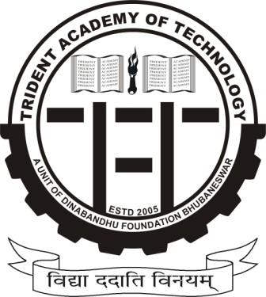

... What Udayan is All About ...
The prime motive of 'UDAYAN' has always been to bring the students of Odisha into a single platform where they would get an opportunity to display their technical skills and showcase co-curricular and extra-curricular events. 'UDAYAN 17/ will host a number of interesting events which includes different 'LAN Games', 'Robo-War, 'Roadies', 'Takeshi's Castle'S, different club events and many more exciting events. Last year UDAYAN was a grand success and had a participation of around 4500 students from all over ODISHA. Udayan is being celebrated from the year of inception of Trident Academy of Technology as an annual TechFest. Its not just a 3-day technical programme event but it has turned into a celebration, students of different colleges come up together to celebrate the time of interaction with each other. Moreover Students get a platform to showcase there skills and win goodies, cash prizes, and recognition. You will enjoy the environment of competing, learning, interacting, playing and the essence of life you will feel here.
... About The Theme ...
The New you gonna see This Year
(The POKEMON Theme)
This year UDAYAN will be celebrated with the POKEMON wrapped around. The culture of POKEMONS has thousands of POKEMONS of recorded history. Ancient Egypt was among the earliest civilizations. Pokemon's cultural contributions have included great works of science, art, and mathematics, dating from antiquity to modern times. Apart from fierce and neck to neck competitions in various fields such as Robotics, Electronics, Business, Design, Coding, Dance, Co-curricular, Online events (DOTA,Clash of Clans) there will various fun events to enjoy and win various goodies along the fun. We also have guest lectures and exhibitions to inspire the students to take that extra step towards innovation.
..Trident Academy OF Technology..
TRIDENT ACADEMY OF TECHNOLOGY
Trident Academy of Technology, Bhubaneswar is one of the fastest growing institutions of Odisha. It has created a landmark in such a short span of time. Udayan 2k17 is the annual technical festival of the college which is the basic platform for students and showcasers to exhibit their knowledge and skill through various events and activities. Celebrating with full enthusiasm, the college hosts this technical festival for 3 days follwoing the musical night after the closing ceremony of the UDAYAN.
Trident Academy of Technology, a name that has become a brand in the field of technical education, is today synonymous with excellence. Trident is where Education meets Enthusiasm. Within just a few years of its establishment, Trident group of institutions has built an image amongst the aspiring masses which is worth the quality of education it imparts.
Address: Trident Academy of Technology, BBSR
Phone:0674 664 9003
E-Mail:Trident.ac.in
Web: www.trident.ac.in
Phone:0674 664 9003
E-Mail:Trident.ac.in
Web: www.trident.ac.in
